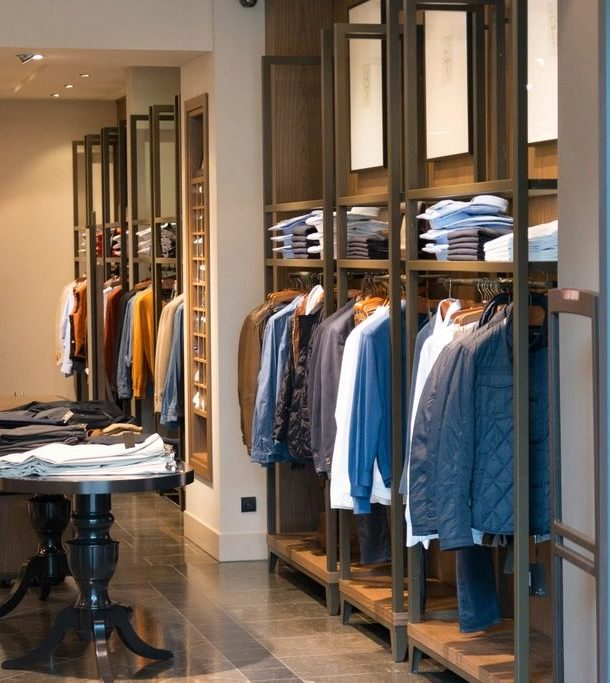
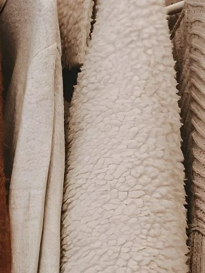

Görünüm I
Deve tüyü katmanlar
- Krem balıkçı yaka triko
- Deve tüyü kumaş pantolon
- Aynı tonda uzun kaban
- Koyu kahve loafer
İpucu: Ton üstüne ton giyerken dokuları değiştirin; düz yün, örgü ve süet yan yana derinlik verir.
Kombin fikirleri
Dokuz görünüm, tek palet: kırık beyaz, siyah ve deve tüyü.
Galeriyi yana kaydırın, fareyle sürükleyin ya da oklarla gezinin. Her görünümün yanında parça parça bir kombin önerisi ve küçük bir ipucu var.
Görünüm I
İpucu: Ton üstüne ton giyerken dokuları değiştirin; düz yün, örgü ve süet yan yana derinlik verir.

Görünüm II
İpucu: Hacimli bir üstü akışkan bir altla dengeleyin; ikisi de hacimliyse siluet kaybolur.
Görünüm III
İpucu: Siyahı tek düze olmaktan kurtaran dokudur: mat yün, ince örgü ve deri bir arada.

Görünüm IV
İpucu: Çizgili bir parçaya tek bir düz renk eşlik etsin; yanına ikinci bir desen eklemeyin.
Görünüm V
İpucu: Gömleğin önünü hafifçe pantolona sokmak bel çizgisini belirginleştirir; kolları iki kez kıvırın.

Görünüm VI
İpucu: Katmanları içten dışa açıktan koyuya sıralayın; yaka ve manşet görünür kalsın.
Görünüm VII
İpucu: Davette ışığı kumaş yapsın; parlak bir parça varsa gerisini mat seçin.
Görünüm VIII
İpucu: Ketenin kırışması doğaldır ve görünümün parçasıdır; hafif buharla yumuşatmak yeter.

Görünüm IX
İpucu: Kalın dokulu bir dış katmanın altında ince ve düz parçalar seçin; bir kalın doku yeter.
Az parça,
çok kombin.Kapsül listesi aşağıda
Son söz
Hepsi aynı on dört temel parçanın farklı eşleşmeleri. Aşağıdaki listede gardırobunuzda olanları işaretleyin; eksikleri tek dokunuşla sorabilirsiniz.
Görünümler kombin fikri vermek için hazırlanmıştır; her parçanın mağazada bulunduğu anlamına gelmez. Güncel ürünleri sorabilirsiniz.
Bir ana renk seçin; yanına en sakin eşlik eden üç tonu ve nasıl kullanılacağını görün. Bu cetvel sessiz bir gardırobun temel tonlarına göre hazırlandı.
Saf beyazdan daha yumuşaktır ve çoğu ten rengine daha kolay uyar. Deve tüyü ve kumla ton ton, siyahla keskin ve net bir görünüm verir.
Kışın: krem triko ve deve tüyü kaban. Yazın: kırık beyaz keten ve kum rengi pantolon.
En kolay görünen ama en çok dokuya ihtiyaç duyan renk. Yanına sıcak bir ton koymak sertliğini yumuşatır; krem bir gömlek ya da deve tüyü bir palto yeterlidir.
Akşam: siyah üzerine siyah, tek parça takı. Gündüz: siyah pantolon, krem triko.
Hem sıcak hem nötrdür; neredeyse her tonla barışır. Lacivertle klasik, çikolata kahveyle ton ton, kremle aydınlık bir görünüm kurar.
Bir deve tüyü kaban, gardırobun en çok çalışan dış katmanı olabilir.
Siyahın yerine geçebilen yumuşak bir nötr. Kırık beyazla ferah, lacivertle düzenli durur; küçük bir bordo dokunuş görünümü canlandırır.
Gri triko, beyaz gömlek yakası ve lacivert pantolon: iş günü için sakin bir üçlü.
Siyahtan daha yumuşak bir koyu; gündüz ışığında daha canlı görünür. Kırık beyazla denizci havası, deve tüyüyle klasik bir sıcaklık verir.
Lacivert blazer, çizgili tişört ve koyu jean: hafta sonunun kolay formülü.
Siyaha alternatif sıcak bir koyu. Krem ve kumla yumuşak geçişler kurar; haki ile doğal, sonbahara uygun bir palet oluşturur.
Kahve süet ceket, krem triko ve kum rengi pantolon.
On dört parça, onlarca kombin.
Gardırobunuzda olanları işaretleyin. Seçimleriniz yalnız bu tarayıcıda saklanır; eksik kalanları WhatsApp’tan sorabilir ya da randevu talebinize ekleyebilirsiniz.
Listede işaretlediğiniz parçalara göre eksikler burada görünür.
Lookbook’taki görünümlerin hepsinde aynı altı alışkanlık var. Kural değil, kısa yol olarak düşünün.
Bir görünümde üç rengi geçmeyin. Nötrler (krem, siyah, gri) arka planı tutar; varsa tek bir renk vurgu yapar.
Bol bir üstü dar bir altla, dar bir üstü bol bir paçayla eşleyin. Bel çizgisi için gömleğin önünü hafifçe içeri sokun.
Aynı renkte farklı dokular görünümü zenginleştirir: örgü, poplin ve yün bir arada tek renkli bir kombini canlandırır.
Geniş paçalı pantolon topuğun yarısını örtmeli; düz ve dar paçalar bileğin hemen üstünde bitebilir.
Takı, çanta ya da desenli şal: birini seçin, gerisini sakin bırakın. Göz tek bir noktada dinlenir.
Ceket ve gömlekte dikiş, omuz kemiğinin bittiği yerde durmalı; kol, başparmak köküne yakın bitmeli.
Beğendiğiniz görünümün numarasını randevu notunuza yazın ya da ekran görüntüsünü WhatsApp’tan gönderin; benzer parçalar hakkında bilgi verelim.